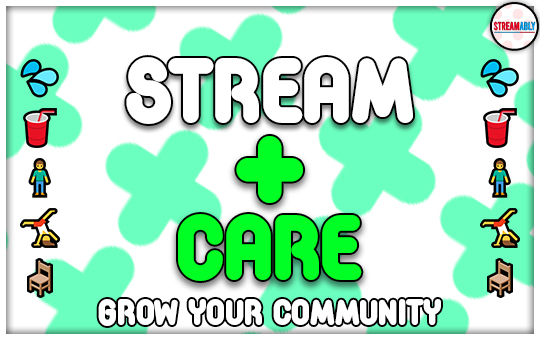

📣 Why you NEED Pronounce 📣
- Express your identity with ease.
- Showcase your support for the LGBTQIA+ community.
- Fully customise your Pronounce alert with numerous styling options.
- This app can help you to showcase your identity to your viewers/followers in a non-invasive way.
- Showing an understanding and an appreciation of preferred pronouns can foster a more inclusive environment that can ultimately help to grow your community.
- ❤️ 🧡 💛 💚 💙 💜 🖤

🌱 Why you NEED Stream+Care 🌱
- Boost Viewership: Investing in your viewers’ wellbeing and health can help to GROW your overall community. Many streamers have found that Stream+Care creates a routine for new AND existing viewers. This increases both viewer engagement and enhances stream growth.
- Better Content: Taking care of your health as a streamer is EQUALLY important if you want to maintain energy levels for entertaining content. Streamers often spend extensive periods sitting down, so Stream+Care commits to caring for your lengthy streams. A better wellbeing = higher quality content.
- You are fully in control: You can decide which alerts and checks that you want to use. Simply use the enable/disable switches. You can also choose how often you wish to be alerted.
- We support ALL streaming platforms! (Twitch, YouTube, Facebook Gaming etc.)
- Stream+Care is non-invasive, like all Streamably services!

🔴 Boost Viewership & Engagement With GoLiveBot! 🔴
- Fully customise your Twitter:
- We support ALL streaming platforms! (Twitch, YouTube, Facebook Gaming etc.)
- GoLiveBot is non-invasive, unlike other social media services for content creators.